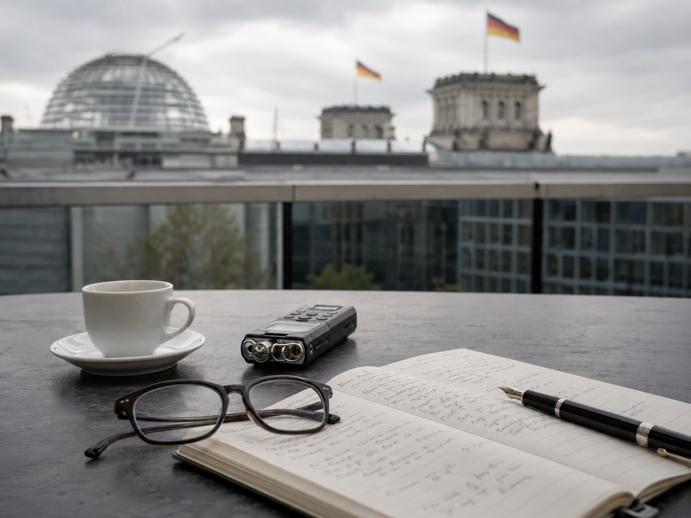

Mehr Demut im Journalismus
Mary Abdelaziz-Ditzow
Ein Gespräch über mehr Demut im Journalismus: über Selbstbeschränkung, Medienkompetenz und die Frage, wie Vertrauen zurückkehrt.

Empfohlen

„Jeder Mensch ist gleich viel wert! Mir ist eine Gleichwürdigkeit wichtig.“

„Wir dürfen sprichwörtlich den Verstand nicht verlieren.“
Aktuelle Gespräche
Wenn alles gleich gültig ist, wird alles gleichgültig
Ein Gespräch über katholische Medien, den Sender K-TV und die Frage, wie Technik dem Glauben dienen kann, ohne ihn zu ersetzen.

Notfallchirurgen statt Allgemeinmediziner
Ein Gespräch über den Zustand des Liberalismus, die Schwäche der Parteien und den Ruf nach mehr wirtschaftlicher Vernunft.

Katholisch, journalistisch, debattenoffen
Ein Gespräch über einen Journalismus, der katholisch, streitbar und debattenoffen zugleich sein will.

Freiheit braucht Widerspruch
Ein Gespräch darüber, warum Freiheit den Widerspruch braucht und was passiert, wenn er verstummt.
Erfahre, sobald neue Gespräche da sind.
Alle zwei Wochen das jüngste Gespräch, kurz eingeordnet. Kein Spam.